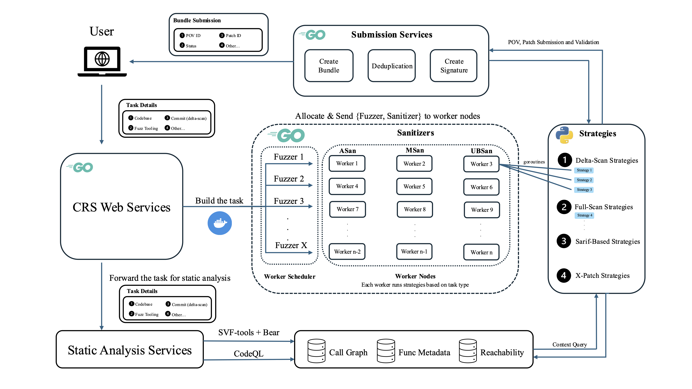

CRS Document
Made By Team All_you_need_is_a_fuzzing_brain
Documentation
- Strategy Overview - Framework and model configurations
- POV Strategies - Proof-of-Vulnerability generation techniques
- Patch Strategies - Vulnerability remediation approaches
- SARIF Processing - Static analysis integration
- Task Processing - Task distribution and execution
- X Strategies - Fallback patching approaches
CRS Configuration Parameters
This CRS detection is based on vulnerabilities from the OSS-Fuzz project. The following are the CRS configuration parameters:
| Parameter | Value |
|---|---|
| Version | 1.2.0 |
| Supported Languages | C/C++, Java |
| Fuzzer Engine | libfuzzer |
| Architecture | x86_64 |
CRS Overview

The CRS architecture comprises four distinct services that work in concert to deliver comprehensive vulnerability detection and remediation capabilities: Task Service, Worker Service, Submission Service, and Static Analysis Service. The system leverages artificial intelligence techniques combined with fuzzing methodologies to provide end-to-end vulnerability management capabilities.
CRS is designed to handle three primary task categories:
- Delta Scan Task: Attempts to identify whether a specific commit introduces vulnerabilities that can be triggered by existing fuzzers, subsequently generating appropriate remediation solutions.
- Full Scan Task: Conducts comprehensive analysis of entire source code repositories to identify vulnerabilities exploitable by known fuzzers, providing corresponding patches.
- SARIF Analysis Task: Validates vulnerabilities based on SARIF (Static Analysis Results Interchange Format) reports, verifying their existence and generating remediation patches when confirmed.
Task Service
The Task Service functions as the orchestration layer, responsible for parsing and processing incoming tasks while acquiring target repositories and fuzzing toolchains. This service constructs appropriate fuzzers and sanitizers based on project specifications, formatting tasks for downstream processing.
Worker Service
The Worker Service represents the core computational engine of CRS, handling task execution based on assigned workspaces, fuzzers, and sanitizers. This service implements the primary vulnerability localization and patching logic through parallel invocation of various LLM-based vulnerability detection and reproduction strategies.
Submission Service
The Submission Service is specifically designed for competition submission management, handling the organization and deduplication of discovered proofs-of-vulnerability (POV) and patches.
Static Analysis Service
The Static Analysis Service provides essential static analysis capabilities that support various CRS strategies. It implements comprehensive functionality including call graph generation and extraction of software context metadata.
Case Study: libpng
This section demonstrates CRS functionality through a practical example involving the identification and remediation of a dynamic stack buffer overflow vulnerability in the libpng project.
Project: libpng
Vulnerability Type: Dynamic Stack Buffer Overflow
Root Cause: An improper use of sizeof operator leading to out-of-bounds read and write operations in the png_handle_iCCP function.
Expected Sanitizer Report:
=================================================================
==18==ERROR: AddressSanitizer: dynamic-stack-buffer-overflow on address 0x7ffe7e032b52 at pc 0x563915a23a9b bp 0x7ffe7e032ad0 sp 0x7ffe7e032ac8
READ of size 2 at 0x7ffe7e032b52 thread T0
....For the complete case study walkthrough, please refer to the Quickstart Guide.